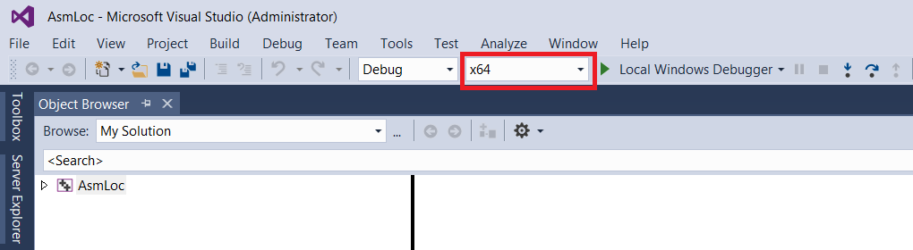
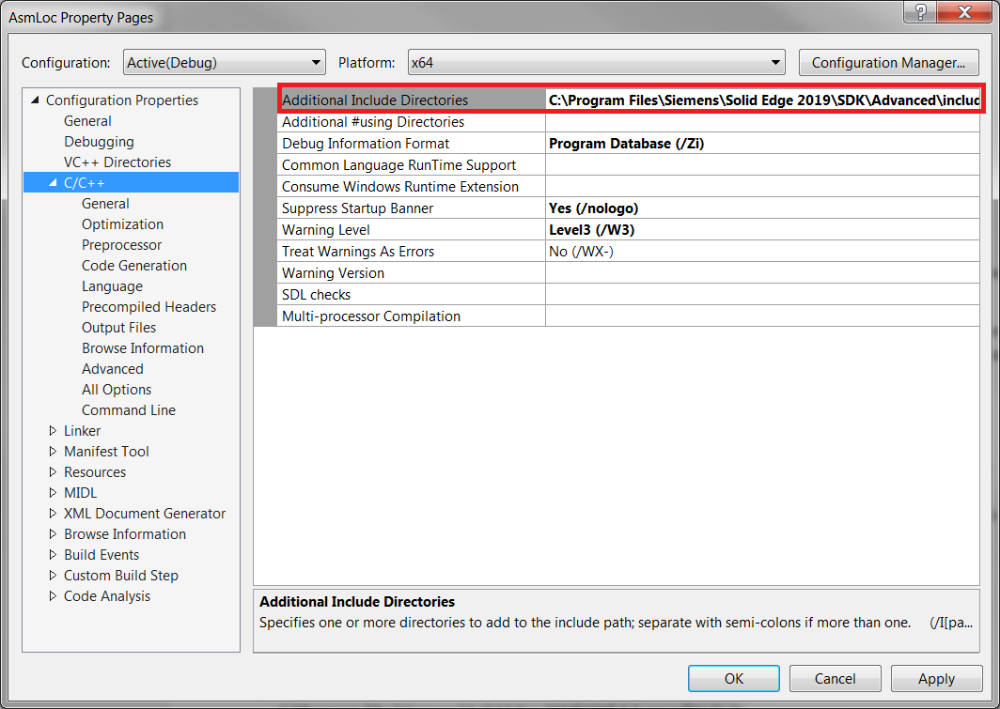
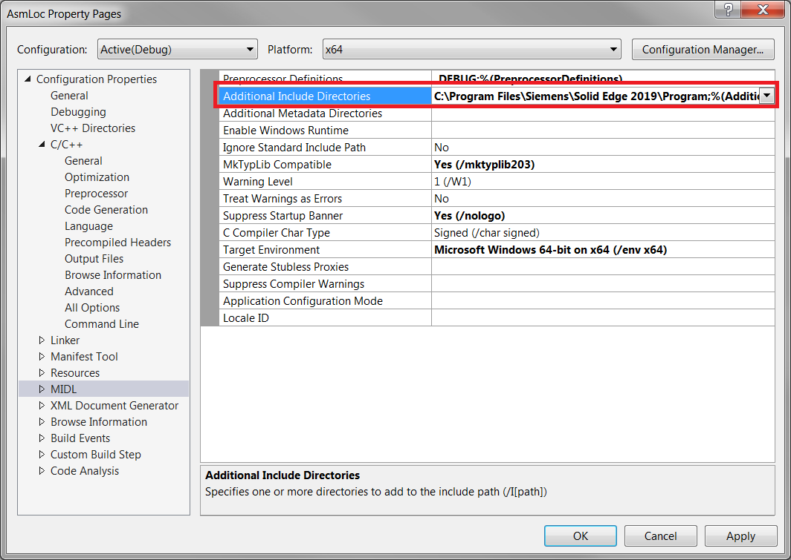
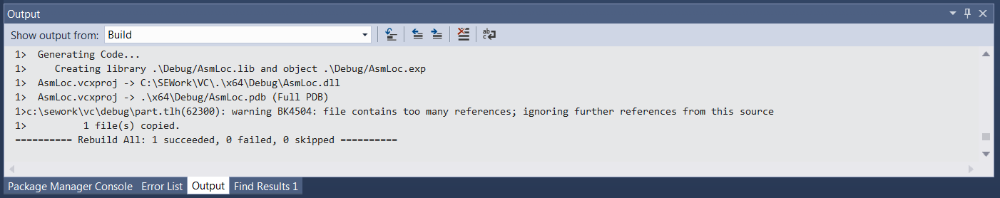
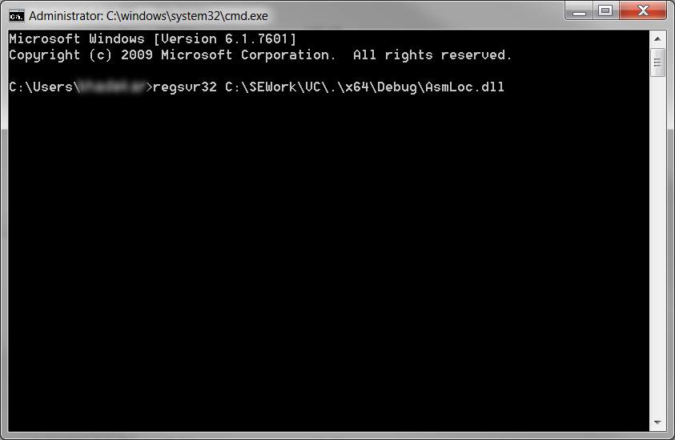
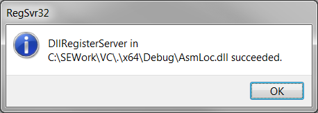
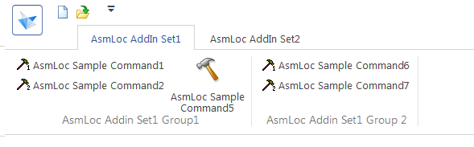
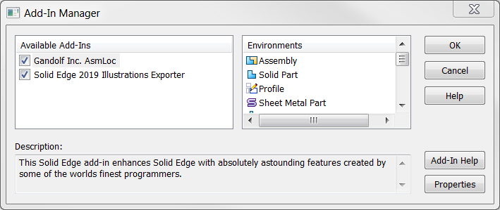

Solid Edge 2019 SDK
How to create an AddIn for Solid Edge using C++?
An Add-In is a dll that can help you to add customized commands into Solid Edge. Add-In appears as a tab in Solid Edge and can be created using VB.NET, C# or C++. To build an Add-In there are four major steps as given below. Please note that I am using snapshots from Visual Studio 2015 (Professional Edition) and Solid Edge 2019 in this topic. Hence, Images of dialog box shown in this topic may differ if you are using different version of Visual Studio and/or Solid Edge.
1. Collecting the files required to create an Add-In using C++
You will need header (.h) files if you are creating an Add-In using C++. These header files are available in Solid Edge setup DVD in SDK > Advanced > Include folder.
You can copy “Advanced” folder at some convenient location on your machine for creating an Add-In using C++. It is recommended to copy “Advanced” folder and paste it in SDK folder which is available at “<installation folder>\SDK”. E.g if you have Solid Edge 2019 installed on your machine then you can copy “Advanced” folder at “C:\Program Files\Siemens\Solid Edge 2019\SDK\”.
You can create your own Add-In in C++ with the help of the steps given below. I am using Visual Studio 2015 (Professional Edition)
1.1 Close all the instances of Solid Edge running on your machine. You can also go to task manager and close all the "edge.exe" running on your machine.
1.2 Copy Advanced folder from DVD to “<installation folder>\SDK” as mentioned above.
2. Setting properties of Visual Studio Solution
2.1 Open “Advanced” folder and then go to “Samples > AddIns > VC” folder. Copy this VC folder to other location so that you can refer an original copy of folder anytime when needed. While copying the folder please make sure that the folder structure doesn’t contain any spaces. There are chances that your Add-In may not get registered if the dll path contains space.
2.2 Now open “AsmLoc.sln” from VC folder. E.g I have copied the VC folder to “C:\SEWork”
2.3 First step is to change the configuration to x64. Since Solid Edge is 64-bit please make sure that the configuration for your solution is also x64. You can change this configuration from standard toolbar by clicking on the dropdown menu available to change the configuration as shown in below image.

2.4 After opening AsmLoc.sln right click on “AsmLoc” solution in “Solution Explorer” and then click on properties. Following dialog box will appear.

2.5 In above dialog box click on C/C++ and then click on “Additional Include Libraries” to add below paths. Please edit below paths based on the version of Solid Edge you are using. Remove existing paths (if any).
• C:\Program Files\Siemens\Solid Edge XXXX\SDK\Advanced\include
• C:\Program Files\Siemens\Solid Edge XXXX\Program
2.6 In same dialog box click on MIDL and add below paths as shown in image.
• C:\Program Files\Siemens\Solid Edge XXXX\SDK\Advanced\include
• C:\Program Files\Siemens\Solid Edge XXXX\Program

2.7 Now right click on solution and select “Build” to build the dll. You should be able to see the progress in “Output” window at the bottom. To enable “Output” window go to View > Other Windows > Output.
2.8 In this Output window you will get the path where the dll is built on your machine as shown in below image.

3. Register and unregister the Add-In
3.1 After building the dll successfully now it’s time to register it. You can register the dll by using regsvr32 <Path of dll> to command prompt.
3.2 Click on start button in windows and type cmd to start command prompt on your machine.
3.3 Type regsvr32 followed by path of dll as shown in below image. You can copy the path of dll from Output window.

3.4 You should receive a message as shown in below image once the dll is registered on your machine.

3.5 Now start Solid Edge to see the Add-In on your machine. You will see an Add-In as shown in below image.

3.6 To unregister the Add-In type “regsvr32 <Path of dll> -u” on command prompt.
4. Verify installed Add-In
4.1 To konw the Add-In registered on your machine you can go to Solid Edge application menu > Settings > Add-Ins. You will see below dialog box.
